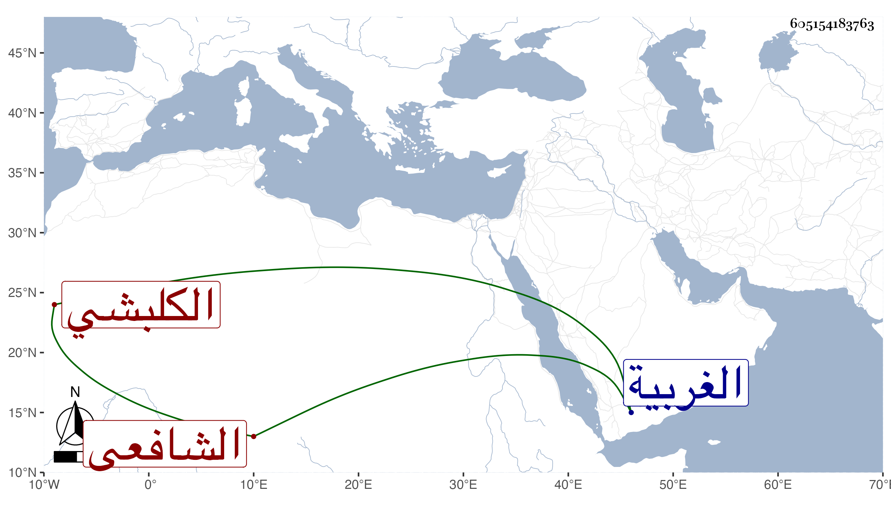

0902Sakhawi.DawLamic.ITO20230111-ara1.EIS1600.605154183763
Biography ID: 605154183763
إبراهيم بن محمد برهان الدين بن تاج الدين الكلبشي وكلبشا بجوار مليج من الغربية الشافعي شيخ معمر يقال أنه جاز المائة كان قد حفظ التنبيه وغيره واشتغل بالفقه والفرائض ويقال أن من شيوخه الأبناسي الكبير وصار مفتي ناحيته ومن عليه المعول في ذلك مع مباشرته قضاء بلده وخطابتها وشدة حرصه على الجمع والتحصيل بحيث قيل أنه خلف تركة هائلة ولم يترك إلا ابنة وأمها وأخا اسمه عبد الغفار استقر بعده في القضاء والخطابة . مات في ربيع الثاني سنة تسعين رحمه الله وإيانا وكان أبوه وجده خطباء البلد وقضاته أيضا .
